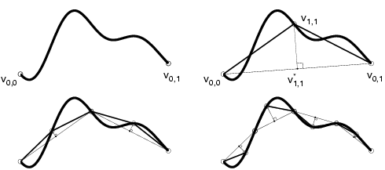

Normal Multiresolution Approximation of Curves
Ingrid Daubechies
Olof Runborg
Wim Sweldens

Abstract: A multiresolution analysis of a curve is normal if
each wavelet detail vector with respect to a certain subdivision
scheme lies in the local normal direction. In this paper we study
properties such as regularity, convergence, and stability of a normal
multiresolution analysis. In particular we show that these properties
critically depend on the underlying subdivision scheme and that in
general the convergence of normal multiresolution approximations
equals the convergence of the underlying subdivision scheme.
Status:
Preprint, Department of Mathematics, Princeton University, February 2002.
Dates:
| April 2002:
|
Initial posting & submission.
|
Download:
PDF (.pdf) (429K).
PostScript (.ps) (736K).
Compressed PostScript (.ps.gz) (210K).
Ingrid Daubechies,
Olof Runborg,
Wim Sweldens